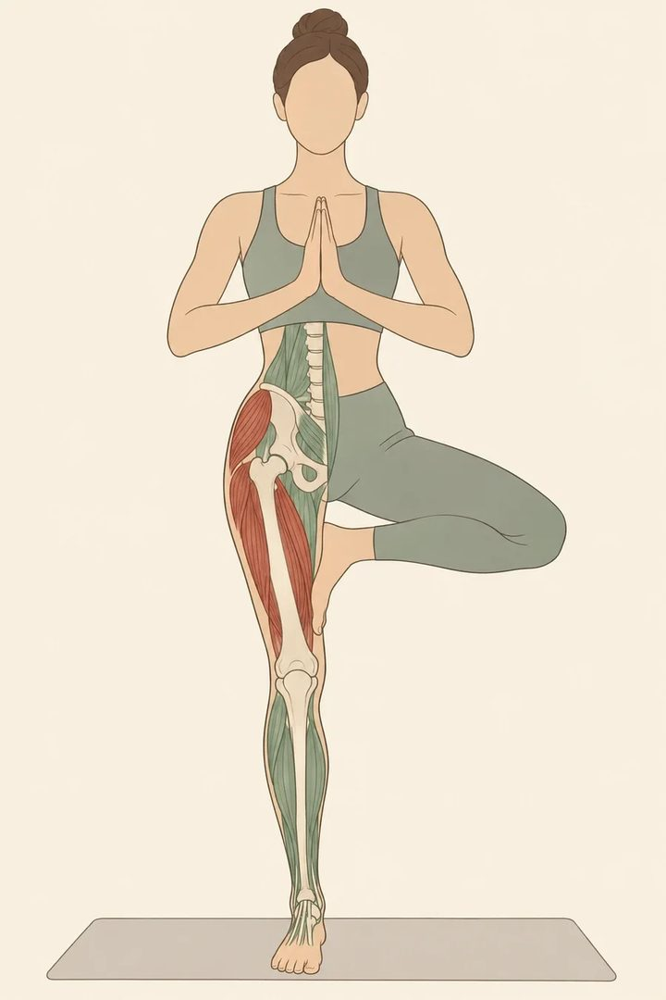
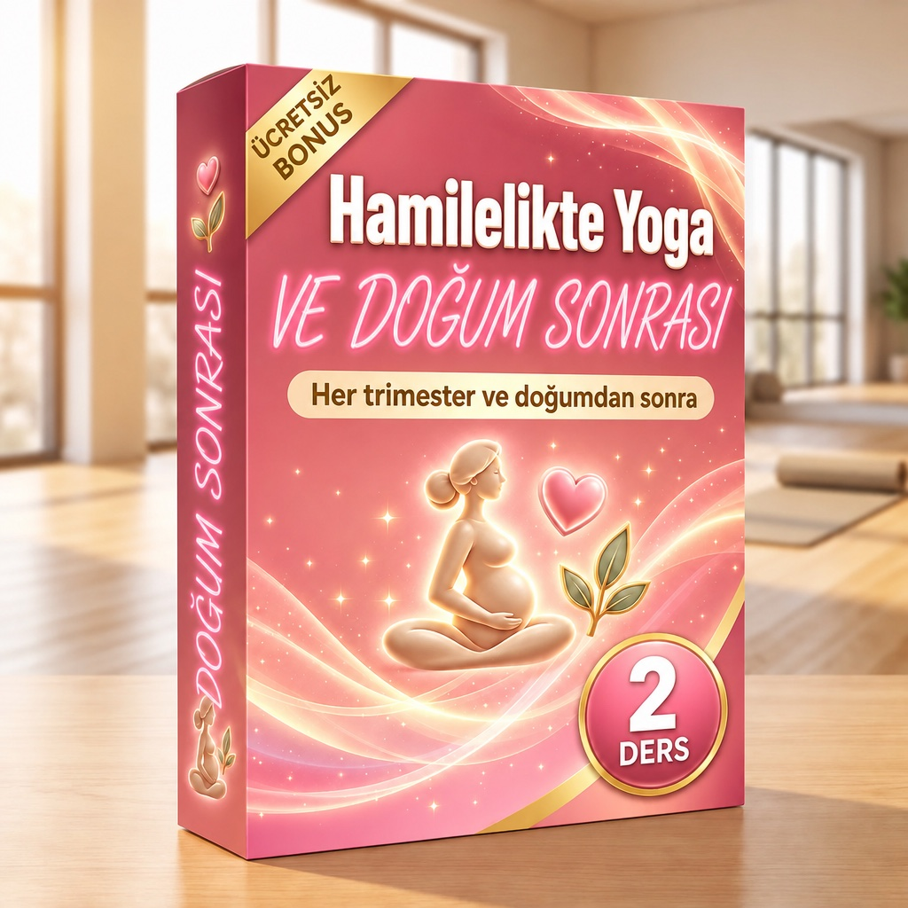
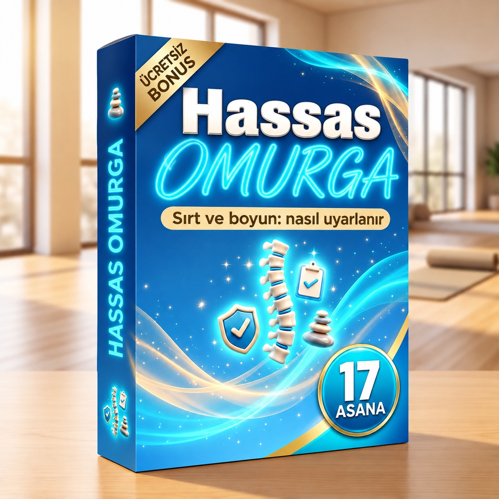
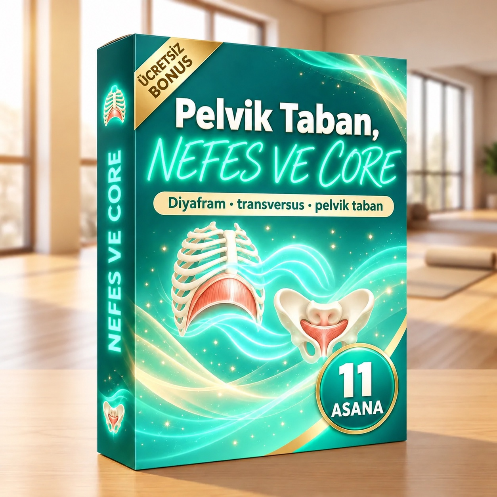
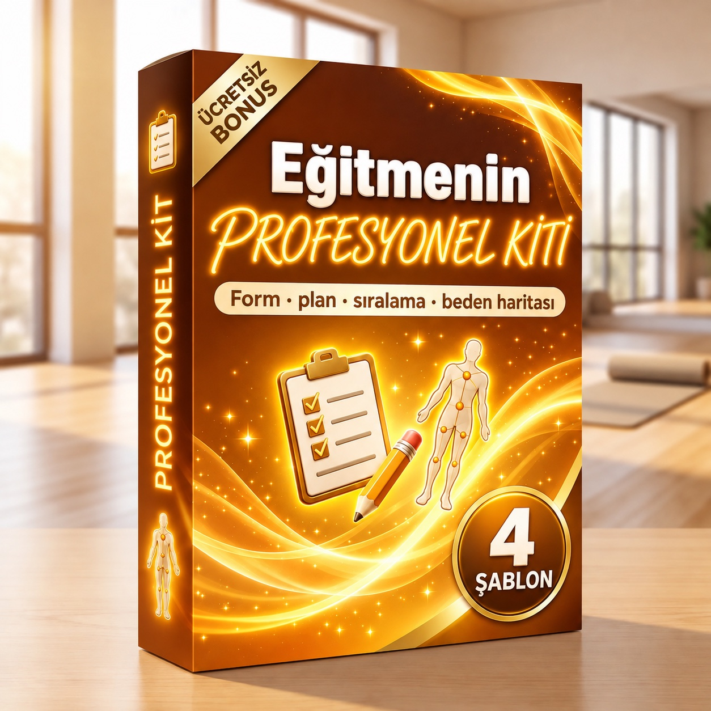

Yoga Anatomisi — Asana Asana
182 sayfa: 8 bölümde 120 asana, her biri kasları renkli figür (kırmızı = çalışır, yeşil = dengeler), aşama aşama omurga ve pelvis, en sık hata ve yönlendirme, ne söylenmeli ve ellerin nereye konacağı. Ayrıca 28 kaslık Kas Atlası ve 60 dakikalık 6 hazır ders.
Kitabı açın (PDF)Eşlik eden uygulama
Asanayı adına, ailesine ya da kasına göre arayın. Bir sonuca dokunun: kartın tamamı açılır.
Hazır dersler
60 dakikalık 6 ders planı, her an elinizin altında. Dokunun: kitapta ilgili sayfa açılır.
- 1 · Temeller: yeni başlayanlar için hizalanmaBaşlangıç · 60 dk · s. 170
- 2 · Ayakta dinamik akışOrta · 60 dk · s. 172
- 3 · Kalçalar ve hamstringlerBaşlangıç · 60 dk · s. 174
- 4 · Adım adım geriye eğilmelerOrta · 60 dk · s. 176
- 5 · Burgular ve omurgaBaşlangıç · 60 dk · s. 178
- 6 · Yavaş ve restoratif pratikTüm seviyeler · 60 dk · s. 180
4 bonusunuz

Hamilelikte ve Doğum Sonrası Yoga
Her trimesterde ve doğumdan sonra neyi koruyacağınız, neyi değiştireceğiniz ve neden kaçınacağınız; uyarlanmış asanalar ve 2 hazır ders.
PDF'i açın · 13 sayfa
Hassas Omurga
Sırtında ya da boynunda rahatsızlık olduğunu söyleyen öğrencide nelere dikkat edilir, 17 asana nasıl uyarlanır ve teşhis koymadan ne zaman bir uzmana yönlendirilir.
PDF'i açın · 14 sayfa
Pelvik Taban, Nefes ve Derin Core
Birlikte çalışan diyafram, transversus, multifidus ve pelvik taban; onları nefesle nasıl yönlendireceğiniz ve 11 asana.
PDF'i açın · 10 sayfa
Eğitmenin Profesyonel Kiti
4 doldurulabilir şablon: öğrenci formu, ders planı, sıralama formu ve beden haritası.
PDF'i açın · 7 sayfaSonraki adım
- Bu hafta öğrettiğiniz 3 asanayı uygulamada arayın ve kartlarını derse girmeden önce okuyun.
- «Derste söyleyin» cümlelerinden birini bir sonraki dersinizde yüksek sesle kullanın.
- Eğitmenin Profesyonel Kiti'nden öğrenci formunu yazdırın ve yeni öğrencilerinizle kullanın.
- Hamile ya da hassas sırtlı öğrencileriniz varsa önce ilgili bonusu okuyun.